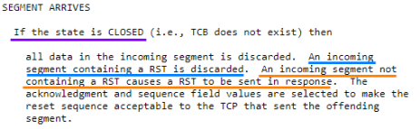
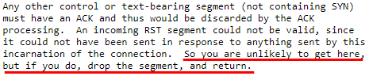
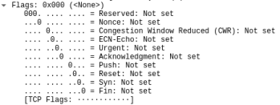
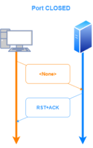
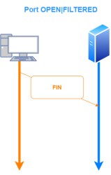
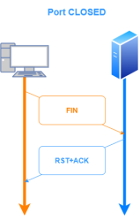

-sN/sF/sX: TCP Null, FIN, and Xmas scans
These scans exploit a loophole in the
RFC:793 (page 65) in order to differentiate between open and
closed ports.
What TCP RFC above basically states is that when we sent an incoming
packet
NOT containing SYN neither RST neither ACK):
• to a destination port that is
closed ◇
send RST+ACK as
response • to a destination port that is
open|filtered (nmap list these, the other ports are considered
closed)
◇
drop the segment and return
How to exploit this behavior
The TCP RFC says
NOT containing this mean that any
combination of the others bits (FIN, PSH, URG) are anyway acceptable!
This mean, if the target machine follows
RFC 793 carefully, we can use them to know when a port is
closed or
open.
Nmap exploits this with three scan types:
• Null scan (-sN) → send
TCP packets without any flags set (TCP flag header is 0)
  ◇ FIN scan (-sF) → Only sets the TCP FIN
flag
• Xmas scan (-sX) → Sets the FIN, PSH, and URG flags,
is called like that because light the packet up like a Christmas tree
This
types of scans no more are so stealthy because most modern IDS and firewalls can be configured to detect them.
Moreover most of the OSs(Windows,Cisco IOS,...) does not follow the RFC:793 to the letter and send RST+ACK
response regardless the port is open or not and this causes the ports to be labeled as
closed. This scan does work against most
Unix-based systems
though.
Another downside of these scans is that they can't always distinguish open ports from certain
filtered ones. If the packet filter sends an ICMP destination prohibited error, Nmap knows that a port is filtered.
But most filters simply drop banned probes
without any response, making the
ports appear
open. So Nmap will return a
open|filtered result and we will have to test further(with -sV or -sA) to
determine the actual state. Anyway we to take in mind that adding version detection (-sV) defeats much of the
stealthy nature of this scan
Bibliography:
https://nmap.org/book/scan-methods-null-fin-xmas-scan.html